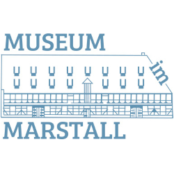

Wat'n Snack!
Genervt, müde oder gut drauf? Für fast jede Stimmung und Situation gibt es auch auf Plattdeutsch einen passenden Spruch. Einfach Stimmung und Situation auswählen und schauen, was dabei herauskommt.
DEIN SPRUCH

Genervt, müde oder gut drauf? Für fast jede Stimmung und Situation gibt es auch auf Plattdeutsch einen passenden Spruch. Einfach Stimmung und Situation auswählen und schauen, was dabei herauskommt.